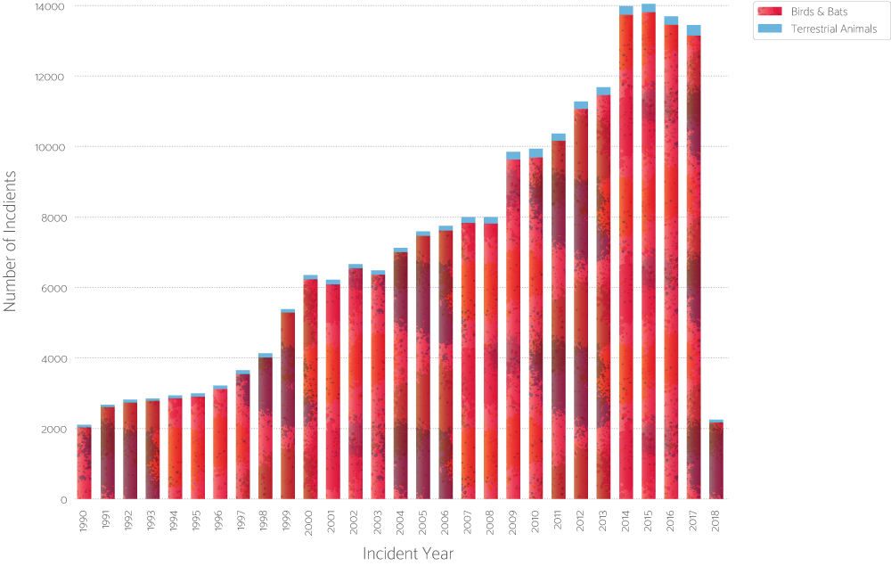

SNARGE!
Colliding With Wildlife Has Cost Airlines Over 588 Million Dollars Since 1990
Angela Wang
Published August 10, 2018
The U.S. Federal Aviation Association has a database of reported wildlife strikes occuring from 1990 through April 2018.
The data show that aircraft have collided with over over 700 species -- from birds and bats, to alligators and domestic pets -- resulting in varying degrees of damage and costs.
The number of collisions per year also seems to be trending upward. I'd like to focus on answering three questions:
-What species are involved in the most accidents/collisions?
-How much have collisions cost? What species are the most expensive to hit?
-Why is the number of reported wildlife strikes increasing?
Money spent on aircraft repairs per year
The single costliest collision occurred in January 2009, resulting in the "Miracle on the Hudson."
On January 15, 2009, a Seattle-bound U.S. Airways flight struck a flock of Canada geese while departing from New York City's LaGuardia Airport.
The collision caused a loss in engine power -- prompting the pilots to make an emergency landing on the Hudson River.
The strike was the costliest of all time, clocking in at a reported $36 million loss.
Of all 207,430 reported collisions since 1990, only 2.1% have involved terrestrial animals. The number jumps to 8.3% when only considering strikes causing damage or repair costs to the aircraft.
Aerial or Terrestrial?
The kinds of animals struck by aircraft every year.

Data from the Department of Transportation show that the number of flights departing in the United States hasn't markedly increased -- so what accounts for the rise in strikes?
According to an FAA spokesperson, the 2009 "Miracle on the Hudson" increased awareness and outreach surrounding aircraft collisions with wildlife.
The representative was careful to caveat that although the number of reported strikes has increased over the years, the number of damaging strikes has decreased significantly nationwide, due to airports implementing wildlife hazard management plans.
Species that cost the most to hit
Or rather, collisions that had costs associated with them hit these animals the most frequently.

Scientists at the Smithsonian Institution's Feather Identification Laboratory are tasked with identifying tissue from bird/plane collisions from all around the United States. Often, all that is salvaged from the crashes are globs of bloody muck called "snarge."
While DNA analysis of snarge is helping airports and aviation professionals target their wildlife management plans, "unknown birds" still account for the largest proportion of collisions, making up over 40% of all wildlife strikes.